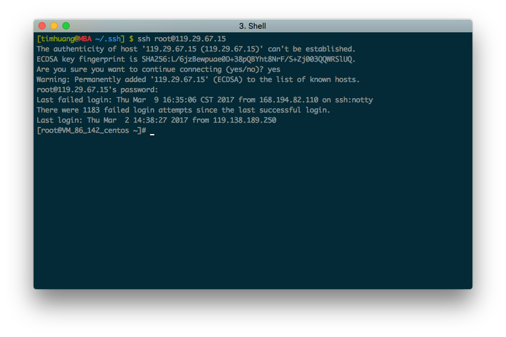
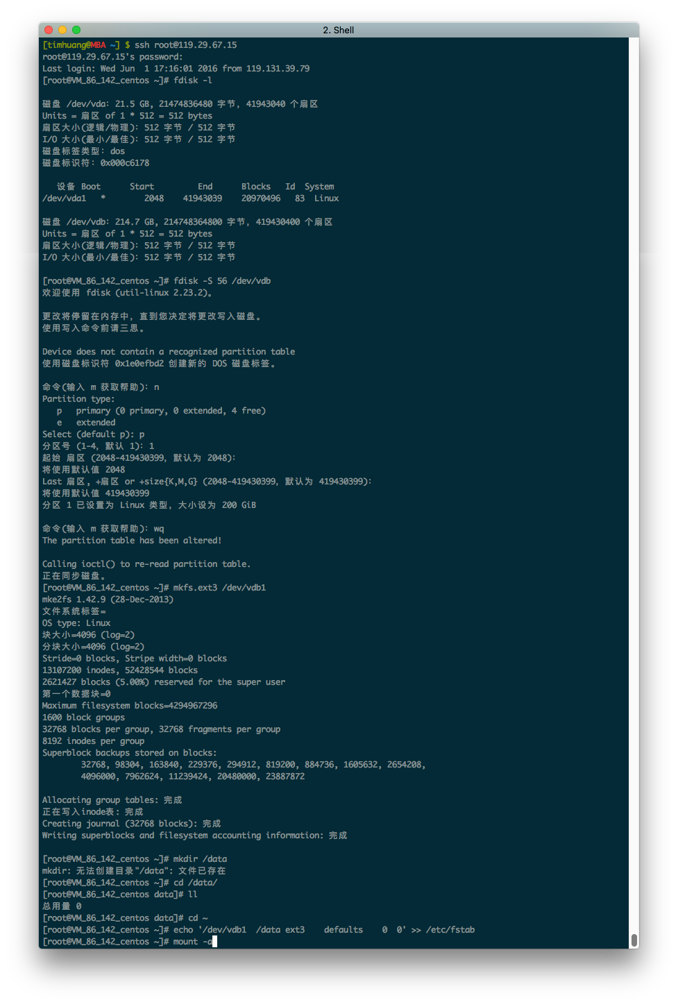

不积跬步，无以至千里；
不积小流，无以成江海。
阿里云服务器（Elastic Compute Service，简称 ECS）是一种简单高效、处理能力可弹性伸缩的计算服务。购买云服务器后，首先要安装并配置好服务软件。下面记录了在 ECS 安装 nginx、php、mysql 和 tomcat 的详细过程。
登录远程服务器
打开 iTerm，也可以选择其它的终端软件，如：Putty、Xshell等。
如图

使用 SSH 可以安全高效地远程管理服务器。首次登录时，需要输入「yes」来确认连接这台未知的远程服务器。登录时需要输入账号和密码。分别输入以下命令
|
|
格式化并挂载数据盘
下面使用 fdist 查看数据盘并分区。简单说明一下使用方法与步骤。
查看所有数据盘：fdisk -l
对数据盘分区：fdisk -S 56 /dev/xvdb，再依次输入 n p 1 enter enter wq
格式化分区：mkfs.ext3 /dev/xvdb1
创建挂载目录：mkdir /data
添加分区信息：echo '/dev/xvdb1 /lgdata ext3 defaults 0 0' >> /etc/fstab
挂载：mount -a
如图所示

安装 nginx
|
|
安装 php
|
|
安装 mysql
|
|
安装 tomcat
|
|
配置 nginx、php 和 tomcat
打开 nginx 配置文件，添加以下配置在 server 中
|
|
重新载入配置文件12nginx -t #测试配置是否正确nginx -s reload
经过以上操作，已经完成安装配置 nginx、php、mysql 和 tomcat。